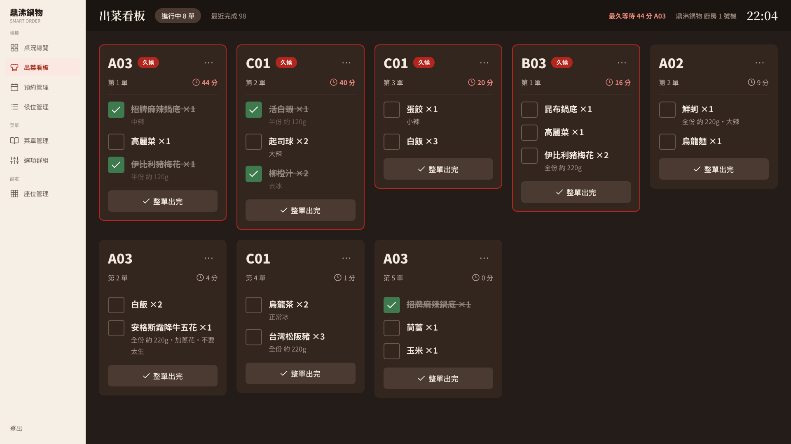
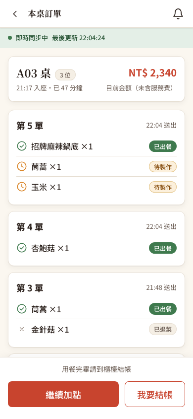

一個狀態設計問題、一個假的即時、一串補上的功能
- 單的狀態跟品項對不上：品項全部勾完，單還是「待製作」，卡片留在看板上；按「整單完成」只改了單，品項還是待製作，客人看到的也是待製作；取消最後一個沒出的品項，單也卡住。
- 客人的出餐進度不是即時的：C-08「本桌訂單」每 15 秒重抓一次，畫面上卻一直寫著「即時同步中」。
- 補上的基本功能：
- 報廢（退菜）API 與畫面。
- 久候 15 分鐘警示。
- 同一張單內「鍋底 → 菜盤 → 肉品」的出餐順序。
- 深色看板、40×40 勾選框、卡片 0.5 秒淡出、斷線提示。
依據 M4 出菜看板規格 4.1–4.12、API 規格 §2.4 與 §3（WebSocket）、UI 規格 S-04 與設計系統 §5.1。4.8「預約優先」要有 M7 的預先點餐才會有這種單，這次不做。
一張卡片 = 一張點餐單
KDS（Kitchen Display System，廚房出菜看板）取代傳統的出單機紙條：客人一送出點餐，看板上就跳出一張卡片，寫著桌號和要做的菜。資料庫裡是兩層：
order_ticket（點餐單）：一次送出就是一張，狀態有PENDING待製作、PREPARING製作中、SERVED已出餐、CANCELLED已取消。order_item（品項）：單裡的每一道菜，各自有PENDING／SERVED／CANCELLED。
M4 規格「問題 1」直接寫了答案：單的狀態要由品項自動算出來，不能手動設。否則兩個廚師同時勾不同品項、或取消一個品項時忘了重算，單的狀態就會跟實際內容對不起來。這叫「單一真相來源」：真正的資料只有品項，單的狀態只是從品項算出來的結果。
三個入口，三種改法，結果都不一樣
原本「勾一道菜」「整單完成」「取消一道菜」各自直接改資料，沒有共用的推導。修正前在隔離環境實測：
兩個品項都變成已出餐，但單還是 PENDING，卡片留在看板上，廚師只能再按一次「整單完成」。
單變成 SERVED，但兩個品項都還是 PENDING。客人手機上的「本桌訂單」顯示「待製作」，菜明明已經上桌了。
另一道已經出了，這張單照理已經全部完成，但它停在 PENDING，卡片收不掉。
規格 4.9 的報廢 API（PATCH /api/admin/order-items/{id}/waste）不存在，呼叫回 404。
客人那一端：廚房的事件只推到廚房的頻道 /topic/kitchen，客人收不到。C-08 只能每 15 秒重抓一次，上方的「即時同步中」是寫死的，連線斷了也照樣顯示。
一個推導元件，所有入口都呼叫它
1. 推導規則只寫一次
新增 OrderTicketStatusUpdater，方法 refreshFromItems(ticketId, …)。每次品項狀態改變後呼叫它，依「沒被取消的品項」算出單的狀態：
- 全部已出 →
SERVED，推TICKET_SERVED，卡片淡出。 - 出了一部分 →
PREPARING。 - 一道都還沒出 →
PENDING。 - 全部被取消或報廢 →
CANCELLED，推TICKET_CANCELLED。
勾選、取消勾選、整單完成、報廢，以及櫃檯的「取消品項」（另一位組員寫的 OrderCancellationService），全部呼叫同一個方法。狀態有變才寫入、才推播。取消勾選一張已完成單上的品項時，單會變回製作中，卡片重新出現。
2. 「整單完成」改成「把沒出的品項都標成已出」
整單完成不再直接改單的狀態，而是在同一個交易裡把還沒出的品項標成 SERVED，再交給推導。這樣客人看到的品項狀態，和廚房看到的永遠一致。重複按也算成功；已取消的單回 409 TICKET_NOT_COMPLETABLE。
3. 兩個廚師同時勾，結果也要對
每條路徑都先鎖住這一桌的用餐場次（dining_session 那一列，SELECT … FOR UPDATE），再鎖單、鎖品項，交易用 READ_COMMITTED（讀取已提交資料）。
- 同一桌的操作會排隊：送單、取消、出餐都先搶同一把場次鎖。第二個廚師拿到鎖時，讀得到第一個廚師剛存好的結果，再拿去推導。
- 不會互相卡死：大家搶鎖的順序都是「先場次、再其他」，不會出現「你等我、我等你」的死結。
4. 出餐進度推給同桌每位客人
交易提交後（不是之前，免得推出去的事後又被取消），除了推廚房頻道，也用 convertAndSendToUser("guest-{id}", "/queue/cart-updates", …) 推給這一桌的每位客人。訊息格式是 {type, payload, serverTime}：
ITEM_SERVED、ITEM_UNSERVED、ITEM_CANCELLED、ITEM_WASTED、TICKET_SERVED、TICKET_CANCELLED。- 最外層不放
sessionId：購物車頁也聽同一個 queue，靠sessionId判斷「這是購物車變動」。不放就不會被誤認。 - 只推給這一桌的客人，別桌收不到。
- 推給客人的版本不帶員工寫的原因（例如「掉到地上」）。C-08 收到事件只會重抓，用不到原因；廚房頻道才保留原因。
C-08 新增 useOrderProgressSocket：收到上面的事件、同桌送出新單（ORDER_SUBMITTED）或結帳（SESSION_CLOSED）就重抓。每次連上或重新連上也重抓一次，因為 WebSocket 保證快，不保證不漏，斷線期間的事件收不到。上方的連線指示改成看真實的連線狀態，輪詢保留當備援（連上時 60 秒一次，斷線時 15 秒一次）。
M4 規格要求、還沒做完的部分
- 報廢／退菜（4.9）：
PATCH /api/admin/order-items/{id}/waste，只給廚房和店長。- 原因必填，1–100 字。
- 寫成
CANCELLED，加上原因與報廢時間wasted_at。庫存不補回，因為食材已經用掉了。 - 同一個交易裡重算帳單，報廢的菜不收錢。
- 重送也回成功，保留第一次的原因。就算第一次成功後這桌剛好結帳，網路逾時重送也一樣回成功。
- 已結帳的桌、一般取消過的品項都不能報廢（409）。
- 客人那邊顯示「已退菜」。
CANCELLED加上wasted_at」而不是新增一種狀態，所以帳單、櫃檯明細、送單回應都不用改。權限規則寫在SecurityConfig，跟其他出菜 API 放在一起；實作者第一版是在 controller 裡自己檢查角色，整合時搬回SecurityConfig，權限才不會散在各處。 - 出餐順序（4.7）：同一張單內，鍋底排最前、菜盤其次、肉品最後；同一級裡照點餐順序。排序寫在 SQL 裡，前端照順序顯示。
- 久候警示（4.6）：等超過 15 分鐘，卡片邊框變紅，加上「久候」標籤，時間閃爍。看板每秒更新時鐘，不用等新資料進來。
- 深色、大字、大勾選框（4.3、4.10、4.11）：色票照設計系統 §5.1 放在
kds.colors.css，桌號 32px、品項 20px，勾選框 40×40，整列都可以點。 - 勾選手感：勾下去畫面先變，再送 API；失敗就重抓、還原。卡片淡出 0.5 秒後才移除。開了「減少動態效果」的話，直接消失。
- 斷線提示：看板頂列顯示 WebSocket 斷線、正在重新連線。
主要程式檔案
backend/src/main/java/tw/ispan/smartorder/service/OrderTicketStatusUpdater.java：狀態推導。backend/src/main/java/tw/ispan/smartorder/service/KitchenTicketService.java：看板查詢與排序、出餐、整單完成、報廢。backend/src/main/java/tw/ispan/smartorder/service/KitchenNotificationService.java：提交後推給廚房與同桌客人。backend/src/main/java/tw/ispan/smartorder/service/OrderCancellationService.java：取消品項後也走同一套推導。backend/db/schema.sql、backend/db/migrate_order_item_waste.sql：order_item.wasted_at與可重複執行的升級腳本。frontend/src/features/admin/kitchen/KitchenOverview.jsx、frontend/src/components/OrderCard.jsx、kds.colors.css：看板畫面。frontend/src/features/customer/order/OrderHistory.jsx、frontend/src/services/realtime/useOrderProgressSocket.js：C-08 出餐進度。
舊資料、隱私、重送與畫面細節
第一版是 commit 2d5574c，獨立審查沒有 P1／P2。下面的 P3 修在 0e43f01；整合者最後看截圖時又發現一個圖示問題，修在 0cd7df6。
1. 舊版程式留下的錯誤資料，升級時一起修好
修正前的程式會留下兩種「對不起來」的單：品項都出完了單還是待製作，或者單已完成、品項卻還是待製作。新版只保證以後不會再產生，已經存在的錯誤資料還在。所以升級腳本 migrate_order_item_waste.sql 多做兩件事，而且只處理還在用餐中的桌：
- 「單已完成、品項待製作」的品項補成已出餐。出餐時間用那張單最後更新的時間，比跑腳本的當下更接近真實時間。
- 再用和
OrderTicketStatusUpdater相同的規則，從品項重算每張單的狀態。
實測方式：先用修正前的後端做出三張錯誤的單，停掉後端，連續跑兩次腳本。結果三張都修好，跑兩次也不會出錯；已結帳桌次的單與品項，前後算出的 MD5（一種資料指紋）完全一樣，代表歷史資料沒有被動到。
2. 員工寫的原因，不要推到客人手機
第一版把報廢、取消的原因放在推給客人的事件裡。畫面不會顯示，但客人打開瀏覽器的開發者工具就看得到「掉到地上」這種內部備註。現在推給客人的版本拿掉原因，只有廚房頻道保留。
3. 重送報廢不會誤報失敗
廚房第一次報廢已經成功，但網路逾時，畫面又自動重送；如果這段時間這桌剛好結帳，原本重送會先撞上「這桌已結帳」而回 409，畫面顯示失敗。現在鎖住這桌之後，先檢查「這道菜是不是已經報廢過」，是的話直接回成功，再做其他檢查。這種「同一個請求送幾次結果都一樣」的性質叫冪等。
4. 連續勾選時，勾勾不會閃回去
連續勾 A、B 兩道菜時，A 完成後的重抓如果比 B 先回來，B 會短暫變回沒勾。現在送出中的勾選會疊在伺服器資料上面，等重抓完成才拿掉。
5. 規格文件跟實作對齊
API 規格 §2.4、§3.4 改成實際的路徑：整單出完是 PATCH /api/admin/kitchen/tickets/{id}/complete。也補上六個出餐事件各自推到哪個頻道、payload 長怎樣。
6. 整合時發現：已退菜旁邊是「等待中」的時鐘
C-08 的「已取消」「已退菜」沿用了待製作的橘色時鐘圖示，客人會以為還在做。改成淡灰色的 ×，只有真的還在做的菜才顯示時鐘。
已知限制（這次沒處理）
出餐順序靠分類名稱「肉品」判斷。菜單管理已經可以改分類名稱，店長如果把「肉品」改名或另外新增「牛肉」分類，肉類會被排到菜盤那一級。已在後續修正：分類多了「出餐順序」欄位（API 規格 §4.12 的六級：鍋底 1、菜盤 2、火鍋料 3、肉品 4、主食 5、飲料甜點 6），看板依它排序，改名不再影響。見菜單管理文章的收尾補完。- 誤勾最後一道菜，畫面上沒辦法復原。卡片會在 0.5 秒內淡出。後端支援「取消勾選」並重新打開這張單，但 UI 規格裡的「最近完成」分頁還沒做（不在 M4 驗收表），所以只能從 API 復原。
- 4.8 預約優先要有 M7 的預先點餐才會有這種單，這次不做。
- 報廢會讓帳單變少，但沒有記錄是哪位員工操作的。以後如果要追查退菜金額，可以加上操作者。
你可以照著做一次
先重現問題（修正前的版本）。
- 送一張兩道菜的單，一道一道勾完：單還是
PENDING，卡片還在看板上。 - 另送一張，按整單完成：品項還是
PENDING，客人的 C-08 顯示「待製作」。 - 呼叫報廢 API：回 404。
- 送一張兩道菜的單，一道一道勾完：單還是
狀態推導（修正後）。
- 勾一道 →
PREPARING；取消勾選 →PENDING；全部勾完 →SERVED，卡片離開看板。 - 再取消勾選一道 → 單回到
PREPARING，卡片回到看板。 - 整單完成 → 每道菜都變
SERVED；再按一次也成功。 - 一道已出、取消另一道 → 單變
SERVED；全部取消 →CANCELLED，這時按整單完成回 409。
- 勾一道 →
報廢。
- 沒登入回 401，櫃檯帳號回 403；原因空白、或超過 100 字，回 400，資料不變。
- 廚房報廢成功後，資料庫有原因與報廢時間，庫存沒有加回去，帳單少了這道菜、服務費跟著重算。
- 重送保留第一次的原因，C-08 顯示「已退菜」。
- 一般取消過的品項不能報廢；已結帳那一桌的品項也不能報廢。第一次報廢成功後這桌才結帳，重送仍回 204。
同時操作（各 3 輪）。
- 三個廚師同時勾同一張單的三道菜：都成功，單是
SERVED。 - 「整單完成」和「取消品項」同時送：結果一定一致，單的狀態等於從品項推導出來的狀態。
- 最後檢查兩桌所有的單，每一張都對得上推導結果，帳單也對得上。
- 三個廚師同時勾同一張單的三道菜：都成功，單是
瀏覽器（看板 1920×1080、C-08 手機 390px）。
- 看板是深色，勾選框 40×40；客人送單後，卡片在 1 秒內出現。
- 廚房勾一道菜，客人手機不用重新整理就變「已出餐」，而且只有這一桌的客人收到事件。
- 等待超過 15 分鐘的卡片出現「久候」和紅框。
- 從選單報廢一道菜，客人看到「已退菜」。
- 按整單完成，卡片淡出後移除。
升級腳本。
- 先用修正前的後端做出錯誤的單，停掉後端，連續跑兩次
migrate_order_item_waste.sql：兩次都成功，錯誤的單都修好。 - 已結帳桌次的資料前後完全一樣。
- 先用修正前的後端做出錯誤的單，停掉後端，連續跑兩次
提交與驗證紀錄
程式版本：Git commit 2d5574c（狀態推導、推播、報廢與看板），0e43f01（審查後修正），0cd7df6（C-08 圖示）。
HTTP 與資料庫檢查
出菜看板專項 102 項、基線 36 項，共 138 項全部通過。三個廚師同時勾、整單完成對取消，各跑 3 輪。紀錄裡也附上修正前版本的觀察結果，以及升級腳本修補舊資料的實測。同一份後端上，菜單管理、購物車、點餐交易、櫃檯代客點餐、結帳的回歸測試（131、56、200、108、156 項）都通過。查看完整 HTTP 紀錄。
瀏覽器與 WebSocket 檢查
19 項全部通過，包含：
- 看板深色與 40×40 勾選框，新單在 1 秒內出現。
- 勾選後 C-08 約 0.1 秒更新，別桌收不到事件。
- 推給客人的報廢事件沒有原因。
- 久候警示、從選單報廢、整單出完淡出。




測試在隔離的 MySQL 5.7 容器進行，每次正式跑之前都用分支的 schema.sql、seed.sql 重建。「這桌已結帳後重送報廢」那一項，是直接用 SQL 把場次改成已結帳來模擬，測完再改回。看板依 UI 規格固定用 1920×1080 檢查（KDS 不做 RWD）。
前輩回饋、報告與履歷
技術前輩的建議
遇到「一個東西的狀態，其實是另一群東西的總結」時，不要讓每個入口各自去改它，寫一個推導方法，所有入口都呼叫它。這個專案裡，勾選、整單完成、取消、報廢四個入口，原本有三種寫法，結果三種錯法。
即時推播有兩個重點：交易提交後才推，重新連線時要重抓一次。另外，畫面上的「即時同步中」一定要接真實的連線狀態，寫死的狀態指示比沒有更糟，因為它會讓人相信錯的東西。
這個功能用到的技術
- 狀態推導（單一真相來源）與交易內一致更新
- MySQL 資料列鎖、固定的鎖順序、
READ_COMMITTED - Spring WebSocket／STOMP：主題頻道與個人 queue、提交後推播
- 帳單重算與報廢不回補庫存的業務規則
- 可重複執行的資料庫升級腳本
- React 樂觀更新、每秒時鐘、淡出動畫、深色主題
專題報告與履歷可以這樣寫
報告：左邊開廚房看板，右邊開客人手機。先示範修正前「勾完卡片不消失、整單完成客人卻看到待製作」，再示範修正後：廚師一勾，客人手機馬上變「已出餐」，全部勾完卡片淡出。最後示範報廢一道菜，帳單自動扣掉。
履歷：「負責餐廳系統廚房出菜看板（KDS）：將點餐單狀態改為由品項推導、統一勾選／整單完成／取消／報廢四個入口，並以固定鎖順序處理多名廚師同時操作；以 WebSocket（STOMP）在交易提交後把出餐進度推送給同桌每位顧客，實作退菜紀錄與帳單重算。」
新手名詞表
- KDS（Kitchen Display System，廚房出菜看板）
- 掛在廚房的螢幕，取代出單機紙條，顯示每張點餐單要做的菜。
- 狀態推導、單一真相來源（single source of truth）
- 真正的資料只存一份（品項狀態），其他狀態（單的狀態）都從它算出來，所以不會對不起來。
- 交易（transaction）
- 把一組資料庫操作當成一次完整的動作：全部成功，或全部取消。
- 資料列鎖、SELECT … FOR UPDATE
- 讀資料的同時鎖住那一列，其他想改它的人要排隊等。
- 死結（deadlock）
- 兩個請求各拿著一把鎖、又在等對方的鎖，誰都無法繼續。固定「先鎖誰、再鎖誰」的順序可以避免。
- READ_COMMITTED（讀取已提交資料）
- 資料庫隔離層級的一種：每次查詢都讀得到別的交易已經存檔的最新結果。
- WebSocket 與 STOMP
- WebSocket 是瀏覽器和伺服器之間一直開著的連線，伺服器可以主動推訊息；STOMP（Simple Text Oriented Messaging Protocol，簡單文字訊息協定）是在上面約定「訂閱哪個頻道、訊息長怎樣」的格式。
- topic 與 queue
/topic/kitchen是大家都能訂閱的廣播頻道；/user/queue/cart-updates是每個人自己的信箱，別人收不到。- afterCommit（提交後）
- 等交易真的存檔成功才做的事。推播放在這裡，才不會推出「其實沒存成功」的消息。
- 樂觀更新（optimistic update）
- 按下去畫面先變，再送請求給後端；失敗再改回來。操作起來比較順手。
- migration（資料庫升級腳本）
- 把正在使用的資料庫升級成新結構的腳本；本案的腳本欄位已存在就略過，可以重複執行。
- C-08／S-04／M4
- C-08 是顧客端「本桌訂單」畫面，S-04 是店家端出菜看板畫面，M4 是出菜看板的模組規格。
- SHA／Git commit
- SHA 是 Secure Hash Algorithm（安全雜湊演算法）；Git 用它幫每個版本（commit）產生識別碼。